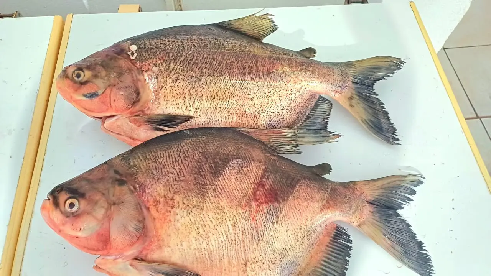
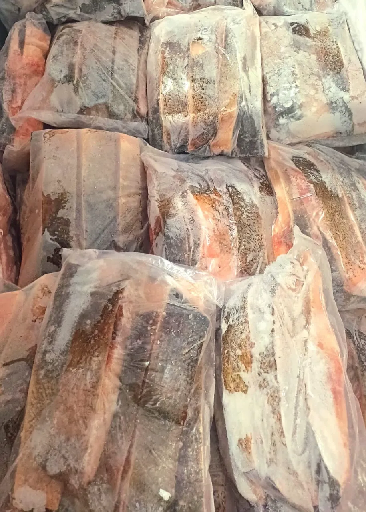
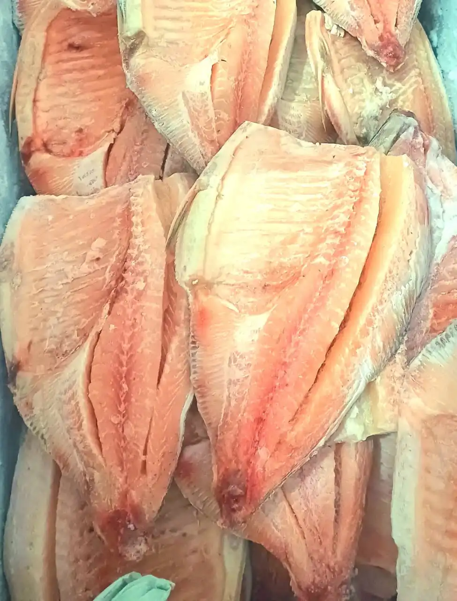
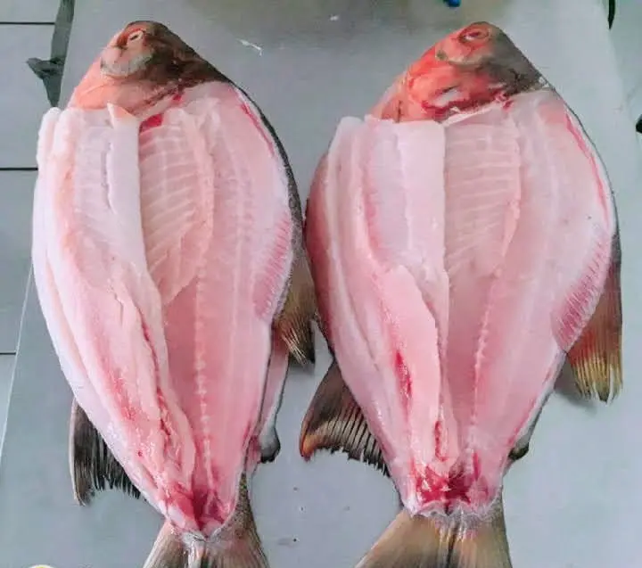
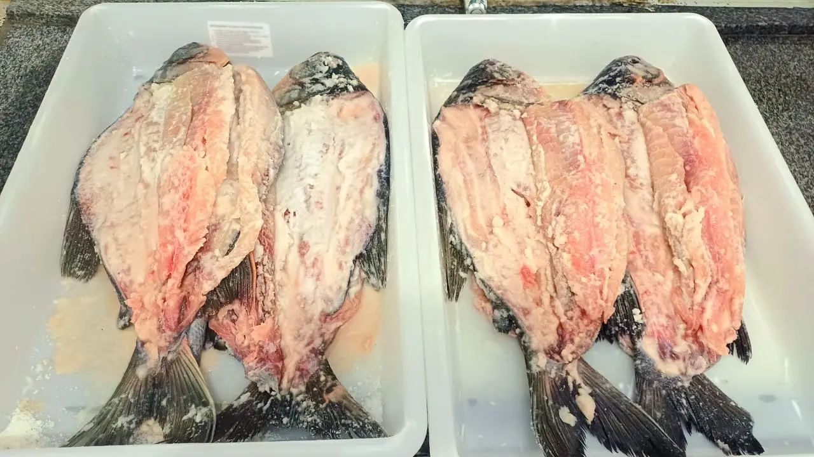

Tambatinga
Ele é o cruzamento entre a fêmea do Tambaqui (Colossoma macropomum) e o macho da Pirapitinga (Piaractus brachypomus).
Escolha o Corte:
Retire na loja: R. Bom Jardim, 379 — Centro, Cáceres.
Tambatinga: O Híbrido da Piscicultura Mato-Grossense que Conquistou os Churrascos do Pantanal
A Tambatinga é o resultado de um cruzamento inteligente desenvolvido pela piscicultura brasileira: fêmea de Tambaqui (Colossoma macropomum) com macho de Pirapitinga (Piaractus brachypomus), dois dos maiores e mais apreciados peixes de escama da Amazônia e do Centro-Oeste. O híbrido resultante reúne o melhor das duas espécies genitoras: o porte avantajado e a rusticidade do Tambaqui, que cresce bem nos tanques do clima quente de Mato Grosso, com a carne mais clara, o sabor suave e a gordura bem distribuída da Pirapitinga. Criada em tanques controlados com qualidade de água monitorada, a Tambatinga apresenta excelente rendimento de carne por quilo e é uma das apostas mais sólidas da piscicultura regional.
O Destaque: A Ventrecha que Rivaliza com a Picanha do Pacu
Entre todos os cortes disponíveis na Tambatinga, a ventrecha é, sem dúvida, o predileto dos conhecedores. A parte ventral do peixe concentra uma camada generosa de gordura entrelaçada à carne — a mesma lógica da picanha bovina, mas com a suculência inconfundível do peixe de escama. Quando assada diretamente na grelha em fogo médio, a gordura derrete lentamente e impregna cada fibra da carne, resultando em uma textura incrivelmente macia por dentro e levemente crocante por fora. É o corte que mais pedidos recebe na Peixaria Rio Paraguai — e o primeiro a esgotar.
Cinco Cortes Disponíveis para Cada Preparo
Trabalhamos com os seguintes cortes de Tambatinga, cada um indicado para uma técnica diferente:
- Inteiro: Limpo e eviscerado. Ideal para assar no forno recheado com farofa, tomate e ervas, ou na brasa inteiro com sal grosso e limão.
- Ventrecha: O corte mais suculento. Perfeito na churrasqueira ou na grelha — ganha uma crosta levemente dourada por fora e derrete por dentro.
- Banda: Metade longitudinal do peixe, ótima para o forno com marinada de alho, urucum e limão, ou para a brasa em fogo indireto.
- Sem Espinha: O corte mais prático — limpo de espinhas, ideal para moquecas, caldeiradas e pratos elaborados que pedem praticidade sem sacrificar o sabor.
- Salgado (sob encomenda): Bandas curadas artesanalmente em sal grosso, sem conservantes químicos. Processo de cura necessita de antecedência — consulte disponibilidade e prazo pelo WhatsApp.
Como Encomendar e Retirar
Os cortes de Tambatinga — inteiro, ventrecha, banda e sem espinha — estão disponíveis conforme o estoque do dia, sempre frescos e abatidos sem câmara de longa duração. A versão salgada precisa ser encomendada com antecedência, pois o processo artesanal de cura exige tempo. Consulte a disponibilidade pelo WhatsApp antes de se deslocar até a Peixaria Rio Paraguai, em Cáceres-MT, na Rua Bom Jardim, 379, no Centro. Produto de piscicultura regional de qualidade, com toda a suculência que o cruzamento Tambaqui × Pirapitinga oferece.